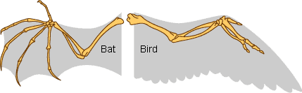

از آنجا که درخت فیلوژنتیکی یک فرضیه در مورد روابط فرگشتی است، ما میخواهیم از ویژگیهایی برای ساختِ درخت استفاده کنیم که نشانگرِ معتبری برای تبار مشترک باشند. ما از ویژگیهای هومولوگ1 (ویژگیهایی که در جانداران مختلف مشابه هستند، چون آن را از یک نیای مشترک که او هم آن ویژگی را داشته است به ارث بردهاند) استفاده میکنیم. یک مثال از ویژگیهای هومولوگ چهار اندامِ زیرینِ تتراپادها2 است. پرندگان، خفاشها، موشها و کروکدیلها همه چهار اندام زیرین دارند؛ کوسهها و ماهیان استخوانی اینگونه نیستند. چهار اندام زیرین در نیاکانِ تتراپادها فرگشت یافت و فرزندان آنها این ویژگی را به ارث بردند -پس وجودِ چهار اندام زیرین یک هومولوژی است.

همهٔ ویژگیها هومولوژی نیستند. برای مثال، هم پرندگان و هم خفاشها بال دارند، در حالی که موشها و کروکدیلها ندارند. آیا این به آن معنی است که پرندگان با خفاشها ارتباط نزدیکتری دارند تا موشها و کروکدیلها؟ خیر.
وقتی بالهای پرنده و خفاش را دقیقتر بررسی کنیم، متوجه تفاوتهایی اساسی میشویم.

بالهای خفاش از لایههای پوست که بین استخوانِ انگشتان و بازو گسترش یافته تشکیل شده است. بالهای پرنده از پرهایی تشکیل شده که در تمامِ طولِ دست گسترش یافته است. این عدمِ تجانسِ ساختاری نشان میدهد که بالهای پرنده و خفاش از یک نیای مشترکِ بالدار به ارث نرسیده است.

بالهای پرنده و خفاش آنالوگ3 هستند -به این معنی که، خواستگاه فرگشتیِ جداگانهای دارند، ولی از لحاظ ظاهری شبیه هستند. چون هر دوی آنها فرایند انتخاب طبیعی را تجربه کردهاند، که آنها را طوری شکل داد که نقشی کلیدی در پرواز ایفا کنند. آنالوژیها نتیجهی فرگشتِ همگرا4 هستند.
جالب توجه اینکه، اگرچه بالهای پرنده و خفاش «به عنوان بال» آنالوگ هستند، «به عنوان اندام جلویی» هومولوگ هستند. پرندگان و خفاشها بال را از یک نیای مشترکِ بالدار به ارث نبردهاند، ولی اندام جلویی خود را از یک نیای مشترک که چهار اندام زیرین داشت به ارث بردهاند.
-
Homologous characters: به ارث رسیده از یک نیای مشترک. چشمهای انسان و موش ساختارهای هومولوگ هستند، چون انسان و موش آنها را از یک نیای مشترک که چشمانی از همین نوع داشت به ارث بردهاند. ↩
-
Tetrapods: کلادی از حیوانات که شامل مهرهدارانی با چهار اندام زیرین استوار (در مقایسه با باله) میشود. ↩
-
Analogous: شباهت به دلیلِ فرگشت همگرا، و نه به دلیلِ داشتن نیای مشترک. دو ویژگی وقتی آنالوگ هستند که دو نسب به صورت مستقل آنها را کسب کرده باشند. ↩
-
Convergent evolution: فرایندی که در آن دو نسبِ مجزا ویژگی مشابهی را به صورت مستقل کسب میکنند، معمولا زمانی اتفاق میافتد که هر دو نسب چالشهای محیطی و فشارِ انتخابیِ مشابهی را تجربه کنند. ↩